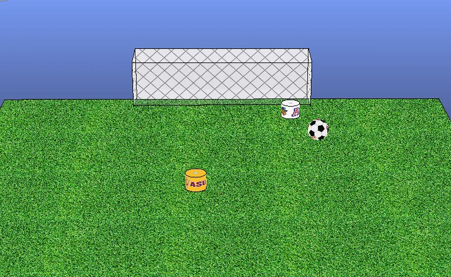
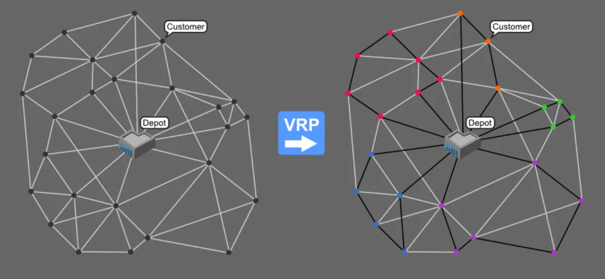
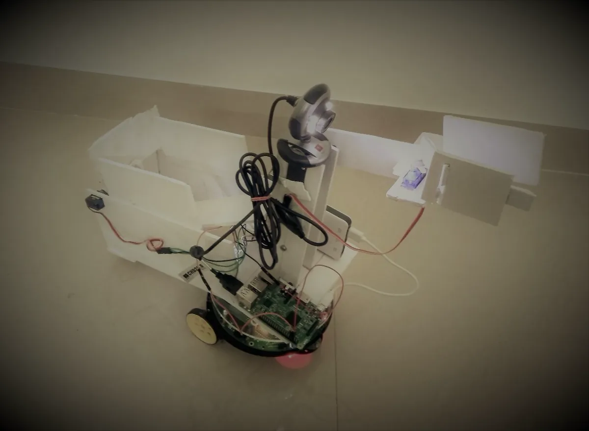
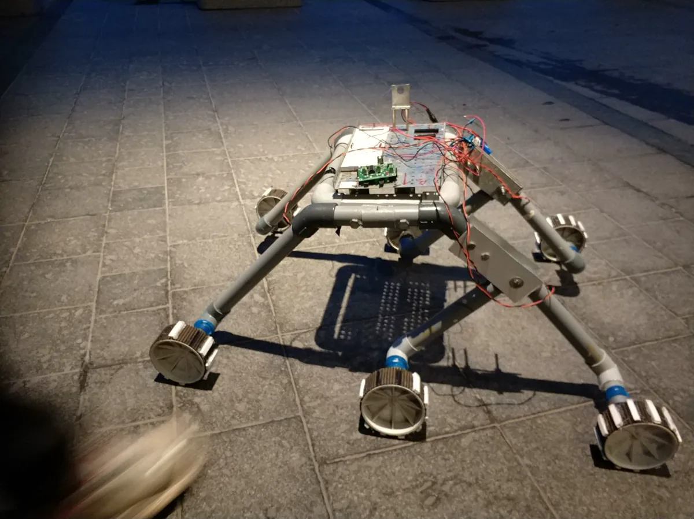

Benchmarking and evaluation
I compare LLM and VLM stacks across NVIDIA, Apple Silicon, and AMD hardware, then turn the results into repeatable recipes, dashboards, and concrete engineering feedback.
My work spans systems software, applied AI, developer tools, and autonomous machines, from benchmarking and evaluation to production automation and hands-on robotics.
Built declarative, automated LLM/VLM benchmarks across DGX Spark, Jetson, DGX, Apple Silicon, and AMD systems, with CI and live dashboards for throughput, latency, and memory.
Contributed benchmarking harnesses, automated tests, and MoveIt 2 / ROS 2 demos for NVIDIA Isaac cuMotion, validated on Jetson Orin and x86.
Built a platform for teams to discover, reserve, and connect to shared Linux, macOS, and Windows systems. A lightweight agent reports live CPU, memory, and GPU health.
Built a scheduled research and briefing service around a locally served Qwen model, with system services, health checks, watchdogs, and deduplication.
I work across the path from a model running on hardware to a developer deciding whether the system is fast, reliable, and useful.
I compare LLM and VLM stacks across NVIDIA, Apple Silicon, and AMD hardware, then turn the results into repeatable recipes, dashboards, and concrete engineering feedback.
I work directly with reviewers, publications, technical bloggers, creators, and press. I help select representative workloads, design reproducible benchmark methods, troubleshoot setup, and interpret results.
My earlier work focused on motion planning, perception, and ROS 2 manipulation on Jetson and x86. That background still shapes how I evaluate AI systems.
Cross-platform LLM/VLM benchmarking across NVIDIA, Apple Silicon, and AMD, reproducible recipes, CI pipelines, and live dashboards. Serving and quantization tuning on vLLM and TensorRT-LLM.
GPU-accelerated robotics on the Isaac stack, Isaac ROS/Sim/Lab, MoveIt 2, ROS 2 manipulation and perception pipelines validated on Jetson and x86.
Agent-driven review harnesses that automate documentation testing, edge-case probing, and structured reporting, functional and quality reviews that produce prioritized, actionable fixes.
Partner with independent reviewers, publications, technical bloggers, creators, and press on fair, representative benchmarks. Author reviewer guides, technical blogs, demo walkthroughs, launch material, and hands-on labs.

Reinforcement learningTrained striker and goalkeeper agents together with Q-learning in V-REP, exploring competing policies, discrete action spaces, and reward design.

PlanningDecomposed vehicle routing into package clustering and delivery routing, comparing two solver pipelines implemented with ROS and simulated in Gazebo.

Computer visionBuilt an E-Yantra robot that detected requested fruit on a Raspberry Pi, plucked it with a gripper, and delivered it to assigned arena coordinates.

Assistive roboticsBuilt a gyro-stabilized, Arduino-controlled prototype with a robotic arm in 24 hours; placed first among 30 national teams and later earned IEEE Best Hackathon Project.
Co-instructed a hands-on robotics course spanning Isaac Sim, Isaac ROS, and hardware-in-the-loop workflows, then helped publish the course materials openly.
GTC 2026Lab instructor for a practical journey through local AI onboarding, inference engines, and agent workflows on a personal AI supercomputer.
DEMOBuilt a hackathon demo that interpreted a simulated robot's camera stream with a vision-language model for obstacle awareness, scene summaries, and navigation direction.
Cross-platform benchmarking, LLM/VLM inference tuning, and agent-driven evaluation. Guide external reviewers and publications on representative workloads and reproducible methods, and create reviewer guides, technical content, demos, and DLI courses.
GPU-accelerated motion planning (Isaac cuMotion), MoveIt 2 / ROS 2 manipulation demos, and perception pipelines validated on Jetson and x86.
Built a Simulink ROS Toolbox block for multi-sensor time alignment and a throughput benchmarking harness whose tuning guidelines were adopted by the team.
Built a ROS package fusing face recognition with order management for a humanoid café robot, and prototyped a vision-based door-unlocking system.
Robotics and Autonomous Systems (Artificial Intelligence), 3.9 / 4.0.
Electronics and Communication Engineering, Bengaluru, India.
I am open to senior engineering roles spanning AI systems, performance, developer tools, and robotics.